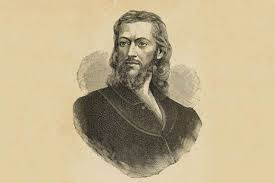
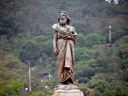
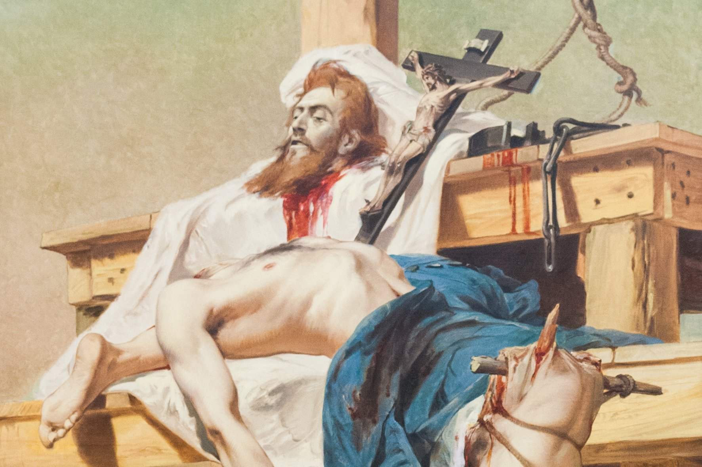

Um convite à memória, à liberdade e ao patrimônio que molda a identidade brasileira.
“Liberdade ainda que tardia”
Lema inspirado na Inconfidência MineiraO legado de Tiradentes atravessa séculos como símbolo de coragem e autonomia.
O Dia de Tiradentes é um feriado nacional que homenageia Joaquim José da Silva Xavier, figura central da Inconfidência Mineira, movimento do final do século XVIII que contestou a pesada cobrança de impostos e o controle político da Coroa portuguesa.
Conhecido como Tiradentes por atuar como dentista, ele também era alferes e se destacou pela defesa de ideias de liberdade e autonomia. Após a denúncia do movimento, foi julgado e executado em 1792, tornando-se um símbolo da resistência e da construção da identidade brasileira.
Mais do que lembrar um personagem histórico, a data celebra o desejo de independência e a construção de um país mais justo. A Inconfidência Mineira reuniu intelectuais, militares e religiosos que sonhavam com uma nova forma de governo e com melhores condições para a população da época.
O feriado, celebrado em 21 de abril, convida à memória histórica e à reflexão sobre cidadania. Ele lembra que a participação social, a educação e o debate público são partes essenciais da vida democrática e do futuro do país.
Em Minas Gerais, cidades históricas como Ouro Preto, Tiradentes e São João del-Rei preservam esse legado em seus museus, igrejas e ruas de pedra, mantendo viva a conexão entre passado, cultura e patrimônio.
Visitar esses lugares é como caminhar por capítulos importantes da história brasileira, onde cada praça, igreja e casarão ajuda a contar a trajetória de um povo que buscou liberdade e identidade.



Clique nos marcos para abrir os detalhes e entender como a Inconfidência se tornou símbolo de liberdade.
Em Vila Rica, intelectuais, militares e religiosos discutem novas formas de governo e criticam a pesada cobrança de impostos.
Com a delação de participantes, o movimento é interrompido e vários envolvidos são presos para investigação.
Tiradentes assume a responsabilidade política do levante e se torna mártir após a sentença de morte.
O 21 de abril mantém viva a lembrança da luta por autonomia, inspirando reflexões sobre democracia e participação.